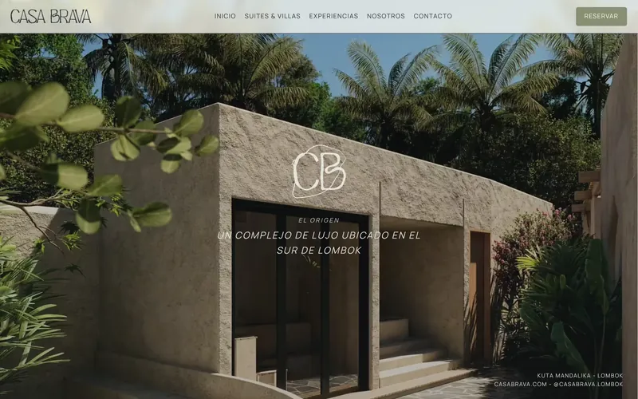
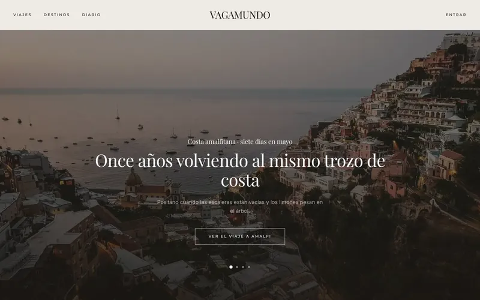
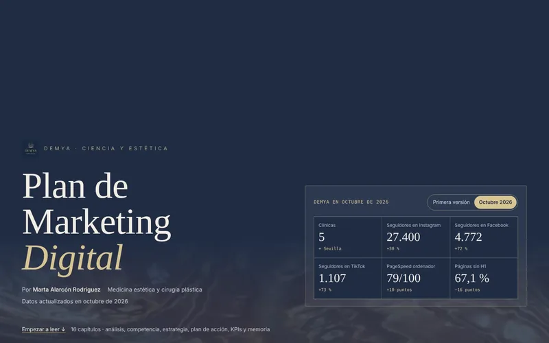

- Web Developer
- Digital Marketing
- Cologne Colonia Köln
I build websites with soul, from first sketch to code. Construyo webs con alma, del primer boceto al código. Ich entwickle Websites mit Seele – von der ersten Skizze bis zum Code.
Web developer with a background in digital marketing and an eye for design. I love brands with character, travel and projects where every detail is cared for.
Desarrolladora web con formación en marketing digital y ojo para el diseño. Me gustan las marcas con carácter, los viajes y los proyectos que se cuidan hasta el último detalle.
Webentwicklerin mit Hintergrund im digitalen Marketing und einem Gespür für Design. Ich liebe Marken mit Charakter, Reisen und Projekte, die bis ins letzte Detail durchdacht sind.
Selected work Proyectos Projekte
Four projects, each with its own character Cuatro proyectos, cada uno con su carácter Vier Projekte, jedes mit eigenem Charakter
A boutique hotel and a senior living project, both hand-coded in HTML, CSS and JavaScript, plus a full-stack travel agency with its own API and database. And a digital marketing plan turned into an interactive report. Un hotel boutique y un proyecto residencial sénior, hechos a mano con HTML, CSS y JavaScript, y una agencia de viajes full stack con su propia API y base de datos. Y un plan de marketing digital convertido en un informe web interactivo. Ein Boutique-Hotel und ein Wohnprojekt für Senioren, beide von Hand mit HTML, CSS und JavaScript programmiert, dazu ein Full-Stack-Reiseveranstalter mit eigener API und Datenbank. Und ein Digitalmarketing-Plan als interaktiver Web-Bericht.
-

Casa Brava An editorial website for a villa retreat that reads like an architecture magazine. Web editorial para un complejo de villas: se lee como una revista de arquitectura. Eine Website im Magazin-Stil für eine Villenanlage – wie ein Architekturmagazin. View case study → Ver caso de estudio → Fallstudie ansehen → -

Vagamundo Catalogue, bookings with seat control and a statistics dashboard, on its own API. Catálogo, reservas con control de plazas y panel de estadísticas, con API propia. Katalog, Buchungen mit Platzverwaltung und Statistik-Dashboard – mit eigener API. View case study → Ver caso de estudio → Fallstudie ansehen → - Golden Chance Senior A bilingual landing page for a residential project: brand, copy and art direction. Landing bilingüe para un proyecto residencial: marca, textos y dirección de arte. Zweisprachige Landingpage für ein Wohnprojekt: Marke, Texte und Art Direction. View case study → Ver caso de estudio → Fallstudie ansehen →
-

DEMYA Audit, competitors, SWOT and KPIs for a group of clinics, as an interactive web report. Auditoría, competencia, DAFO y KPIs para un grupo de clínicas, en un informe web interactivo. Audit, Wettbewerb, SWOT und KPIs für eine Klinikgruppe – als interaktiver Web-Bericht. View case study → Ver caso de estudio → Fallstudie ansehen →
How I can help Cómo puedo ayudarte Wie ich helfen kann
For your team or for your brand Para tu equipo o para tu marca Für Ihr Team oder Ihre Marke
If you're hiring, here's what I bring to a team. If you have a brand, here's what I can do for it. Si buscas a alguien para tu equipo, esto es lo que aporto. Si tienes una marca, esto es lo que puedo hacer por ella. Wenn Sie jemanden für Ihr Team suchen, sehen Sie hier, was ich mitbringe. Wenn Sie eine Marke haben, sehen Sie hier, was ich für sie tun kann.
Available now Disponible ahora Ab sofort verfügbar
I'm looking for an internship or a first role that brings together web development, digital marketing and design. Busco prácticas o un primer puesto donde unir desarrollo web, marketing digital y diseño. Ich suche ein Praktikum oder eine erste Stelle, in der sich Webentwicklung, digitales Marketing und Design verbinden.
- Internship Prácticas Praktikum
- 3–6 months 3 a 6 meses 3–6 Monate
- Location Ubicación Standort
- Cologne, Germany Colonia, Alemania Köln
- Start Inicio Beginn
- Immediately Inmediato Ab sofort
Web development Desarrollo web Webentwicklung
Hand-coded, accessible, fast websites, plus React apps on their own API.
Webs a mano, accesibles y rápidas, y aplicaciones con React y una API propia.
Handgeschriebene, barrierefreie und schnelle Websites sowie React-Apps mit eigener API.
- HTML
- CSS
- JavaScript
- React
- TypeScript
- Node
Digital marketing Marketing digital Digitales Marketing
Websites built to be found and to convert, backed by data and priorities.
Webs pensadas para que se encuentren y conviertan, con datos y prioridades.
Websites, die gefunden werden und überzeugen – mit Daten und Prioritäten.
- SEO
- Analytics
- Social media
- KPIs
Design Diseño Design
Visual identity and art direction, with care for every detail.
Identidad visual y dirección de arte, cuidando cada detalle.
Visuelle Identität und Art Direction – mit Liebe zum Detail.
- Figma
- Branding
- UI
Languages & teamwork Idiomas y equipo Sprachen & Team
- Spanish Español Spanisch Native Nativo Muttersprache
- German Alemán Deutsch Fluent Muy alto Sehr gut
- English Inglés Englisch Advanced Avanzado Fortgeschritten
Plus five years of leading groups.
Y cinco años coordinando grupos.
Dazu fünf Jahre Gruppenleitung.
I work with brands that want a website with personality or a clear plan to grow online. Trabajo con marcas que quieren una web con personalidad o un plan claro para crecer online. Ich arbeite mit Marken, die eine Website mit Persönlichkeit oder einen klaren Plan für ihr Wachstum online möchten.
-
01
A website for your brand Web para tu marca Eine Website für Ihre Marke
A custom website, from a single landing page to a multi-page site.
Diseño y desarrollo de una web a medida, de una landing a varias páginas.
Eine maßgeschneiderte Website, von der Landingpage bis zur mehrseitigen Website.
- Diseño y textos con el tono de tu marca
- Adaptada a móvil, rápida y accesible
- En varios idiomas si lo necesitas
- Contacto por formulario o WhatsApp
- Design and copy in your brand's voice
- Mobile-friendly, fast and accessible
- Multilingual if you need it
- Contact via form or WhatsApp
- Design und Texte im Ton Ihrer Marke
- Mobil optimiert, schnell und barrierefrei
- Auf Wunsch mehrsprachig
- Kontakt per Formular oder WhatsApp
Ideal for Ideal para Ideal für New brands, local businesses and projects with character. Marcas nuevas, negocios locales y proyectos con carácter. Neue Marken, lokale Unternehmen und Projekte mit Charakter.
See: Ejemplos: Beispiele: Casa Brava · Golden Chance Senior
-
02
Redesign & improvements Rediseño y mejora Redesign & Optimierung
For existing websites that no longer reflect who you are.
Para webs que ya existen pero no transmiten lo que eres.
Für bestehende Websites, die nicht mehr zeigen, wer Sie sind.
- Revisión de velocidad, SEO y accesibilidad
- Nueva imagen sin empezar de cero
- Lista clara de mejoras por prioridad
- A review of speed, SEO and accessibility
- A fresh look without starting from scratch
- A clear, prioritised list of improvements
- Analyse von Ladezeit, SEO und Barrierefreiheit
- Ein neuer Look, ohne bei null anzufangen
- Eine klare, priorisierte Liste mit Verbesserungen
Ideal for Ideal para Ideal für Websites that work but have fallen behind. Webs que funcionan, pero se han quedado atrás. Websites, die funktionieren, aber nicht mehr zeitgemäß sind.
See: Ejemplo: Beispiel: the DEMYA web audit la auditoría web de DEMYA das Website-Audit für DEMYA
-
03
Digital marketing plan Plan de marketing digital Digitaler Marketingplan
A clear plan to grow online, backed by data and priorities.
Un plan claro para crecer online, con datos y prioridades.
Ein klarer Plan für Ihr Wachstum online – mit Daten und Prioritäten.
- Auditoría de web, SEO y redes
- Competencia y DAFO
- Objetivos SMART, plan de acción y KPIs
- Website, SEO and social media audit
- Competitor analysis and SWOT
- SMART goals, action plan and KPIs
- Analyse von Website, SEO und Social Media
- Wettbewerbsanalyse und SWOT
- SMART-Ziele, Maßnahmenplan und KPIs
Ideal for Ideal para Ideal für Businesses that want to grow with data, not guesswork. Negocios que quieren crecer con datos, no a ciegas. Unternehmen, die datenbasiert statt aus dem Bauch heraus wachsen wollen.
See: Ejemplo: Beispiel: DEMYA
How I work Cómo trabajo So arbeite ich
-
01
A 15-minute coffee
Café de 15 minutos
15 Minuten Kaffee
You tell me your idea and we see if we're a good fit.
Me cuentas tu idea y vemos si encajamos.
Sie erzählen mir von Ihrer Idee und wir sehen, ob es passt.
-
02
A clear proposal
Propuesta clara
Klares Angebot
Scope, timeline and price in writing, with no surprises.
Alcance, plazos y precio por escrito, sin sorpresas.
Umfang, Zeitplan und Preis schriftlich – ohne Überraschungen.
-
03
Design & build
Diseño y desarrollo
Design & Umsetzung
I share progress and we fine-tune it together.
Te enseño avances y lo ajustamos juntos.
Ich zeige Zwischenstände und wir passen gemeinsam an.
-
04
Launch
Entrega
Übergabe
Your site goes live and I show you how to look after it.
Tu web publicada y te explico cómo mantenerla.
Ihre Website geht online und ich zeige Ihnen, wie Sie sie pflegen.
Have a project in mind? Tell me about it and I'll suggest the next steps. ¿Tienes un proyecto en mente? Cuéntamelo y te propongo los siguientes pasos. Sie haben ein Projekt im Kopf? Erzählen Sie mir davon – ich schlage Ihnen die nächsten Schritte vor.
About me Sobre mí Über mich
Hi, I'm Marta Hola, soy Marta Hallo, ich bin Marta
I'm creative and curious, drawn to the point where technology, communication and digital growth meet. Soy creativa y curiosa, y me interesa el punto donde se cruzan la tecnología, la comunicación y el crecimiento digital. Ich bin kreativ und neugierig und interessiere mich für die Schnittstelle zwischen Technologie, Kommunikation und digitalem Wachstum.
I come from early childhood education, where I spent five years leading groups of children in Cologne and Hanover, planning each day and encouraging their creativity. I decided to change careers to bring my creative side together with digital and technical skills, and that path led me to web development and digital marketing.
Vengo de la educación infantil: cinco años dirigiendo grupos en Colonia y Hannover, organizando el día a día y fomentando la creatividad. Decidí reorientar mi carrera para unir mis intereses creativos con habilidades digitales y técnicas, y eso me ha traído hasta el desarrollo web y el marketing digital.
Ich komme aus der frühkindlichen Bildung: Fünf Jahre lang habe ich Kindergruppen in Köln und Hannover geleitet, den Alltag organisiert und Kreativität gefördert. Ich habe mich bewusst neu orientiert, um meine kreativen Interessen mit digitalen und technischen Fähigkeiten zu verbinden. So bin ich zur Webentwicklung und zum digitalen Marketing gekommen.
From those years I've kept my organisational skills, my patience and a knack for explaining things clearly. Outside work you'll find me reading, at concerts, dancing, ice skating or getting lost in fashion, design and interiors.
De esa etapa me traigo la organización, la paciencia y saber explicar las cosas con claridad. Fuera del trabajo me encontrarás leyendo, en un concierto, bailando, patinando sobre hielo o pensando en moda, diseño y decoración.
Aus dieser Zeit bringe ich Organisationstalent, Geduld und die Fähigkeit mit, Dinge klar zu erklären. In meiner Freizeit lese ich, gehe auf Konzerte, tanze, laufe Schlittschuh oder beschäftige mich mit Mode, Design und Inneneinrichtung.
- Education Formación Ausbildung
- Master's degree, CEI · 2026 Máster, CEI · 2026 Master, CEI · 2026
- Languages Idiomas Sprachen
- ES · EN · DE
- Based in Vivo en Wohnort
- Cologne Colonia Köln
- Available for Disponible Verfügbar
- 3–6 month internship Prácticas de 3 a 6 meses Praktikum, 3–6 Monate
Contact Contacto Kontakt
Got a project or an opening? Let's talk. ¿Tienes un proyecto o una vacante? Hablemos. Sie haben ein Projekt oder eine offene Stelle? Lassen Sie uns sprechen.
I'm looking for an internship or my first role in web development or digital marketing, at an agency or a brand with personality. I'm also open to freelance projects.
Busco prácticas o un primer puesto en desarrollo web o marketing digital, en agencia o en una marca con personalidad. También me encantan los proyectos freelance.
Ich suche ein Praktikum oder eine erste Stelle in der Webentwicklung oder im digitalen Marketing, in einer Agentur oder bei einer Marke mit Persönlichkeit. Auch für Freelance-Projekte bin ich offen.
- Email martaalarcon22@icloud.com
- LinkedIn in/rodriguezbymarta
- GitHub hellobymarta
- CV CV Lebenslauf Español English Deutsch
Thank you! ¡Gracias! Vielen Dank!
Your message has reached me. I'll get back to you as soon as I can. Tu mensaje me ha llegado. Te responderé lo antes posible. Ihre Nachricht ist bei mir angekommen. Ich melde mich so bald wie möglich.